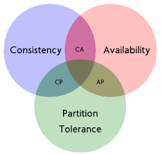

zookeeper简介
背景
zookeeper是一个分布式解决方案，那么分布式系统有哪些特点？
- 并发，同一个分布式系统的不同节点，访问同一个资源文件；
- 无序，客户端的请求和服务端响应无序，进程间通信的无序；
以上问题引发的分布式问题：
网络波动
分布式系统的各节点部署在不同的机器，甚至不同的机房里，因此网络的稳定性直接影响分布式系统的稳定性，丢包、延迟等会对系统的可用性造成不利影响，严重的可能造成服务瘫痪。
网络分区
所谓的网络分区，简单理解就是在分布式系统里，节点与节点之间网络延迟增大甚至断开导致无法互相通信，造成数据不同步，数据分散在几个区域之中。网络分区导致的结果就是数据一致性问题，不同节点的数据可能不同。
三态
分布式系统的每次请求和响应，都存在三种状态：成功、失败和超时。三态与网络波动有直接的关系
分布式事务
事务的ACID（原子性、一致性、隔离性、持久性），在分布式系统中对数据进行事务处理具有非常大的挑战，很难保证事务在同一条件下提交/回滚，因此两种理论对分布式事务的实现提供了理论基础。
CAP理论
这个定理起源于柏克莱加州大学（University of California, Berkeley）的计算机科学家埃里克·布鲁尔在2000年的分布式计算原则研讨会（Symposium on Principles of Distributed Computing（PODC））上提出的一个猜想。 在2002年，麻省理工学院（MIT）的赛斯·吉尔伯特和南希·林奇发表了布鲁尔猜想的证明，使之成为一个定理（以上内容摘自维基百科）。
一致性（Consistency），所有节点都保存一份最新数据的副本；
可用性（Availability），客户端的每次请求都能得到服务端的成功响应，无论数据是否正确或最新；
分区容错性（Partition-tolerance），分布式系统一旦出现了网络分区，就必须在一致性和可用性之间保证二选其一。

通过以上理论，无法同时满足三种特性，那么该如何取舍，取决于实际的场景。
在大型互联网产品中，集群的机器数量多，节点分散，因此网络故障或者某些节点故障也难以避免，为了保证N个9的可用性，也就是保证可用性和分区容错（AP），一般会舍弃一致性（放弃瞬时一致，保证最终一致）。而另一种情况下，如果涉及到非常重要的数据，宁可服务停止也要保证数据一致性，比如资金数据等，这就要放弃高可用（CP）。前一种场景，eBay的架构师另辟蹊径又提出了另一种方案，它基于CAP理论，做了进一步延申，就是BASE理论。
BASE理论
基本可用（Basically Available），指在发生节点故障时，在保证核心功能正常运行的前提下，允许损失一部分服务，同时为这些服务提供降级服务。
软状态（Soft State），即允许分布式系统存在中间状态，该中间状态不对系统可用性造成影响，因为网络肯定存在延时的情况，允许节点之间数据同步发生延时就是一种软状态。
最终一致性（Eventual Consistency），与强一致性的理论相对，允许数据在短时间内不一致，但最终数据同步后达到一致的状态。
在上述的背景下，zookeeper由雅虎公司基于google chubby研发，作为一个开源的分布式应用协调服务和分布式数据一致性的解决方案，解决分布式系统中遇到的上述问题。
能做什么
数据发布/订阅
负载均衡
命名服务
分布式独享锁
master选举
分布式队列
有哪些特点
顺序一致性
来自客户端的更新请求，最终都会严格按照请求顺序在zookeeper中保持一致。简单来说，就是客户端将NodeA的值更新为a，紧接着将值更新为b，那么其他节点同步的数据，肯定是先看到a，再看到b。
原子性
所有事务请求的最终结果在集群中所有节点上是一致的，要么都成功，要么都失败。
持久性
事务操作（增删改）一旦成功并且对客户端做了相应，那么这个更新就会持久存在且不被撤销。
实时性
在某一段特定的时间内，客户端能立即从服务端读取到最新的数据，并且在此时间段内，节点中任何数据的改变，都将被客户端发现。
zookeeper如何安装
环境准备
系统环境：centos7
软件环境：JDK6+
单机模式
下载zookeeper，用的是3.4.10版本
1
wget https://archive.apache.org/dist/zookeeper/zookeeper-3.4.10/zookeeper-3.4.10.tar.gz
解压
1
tar -zxvf zookeeper-3.4.10.tar.gz
复制并重命名配置文件
进入zk的conf目录，看到一个zoo_sample.cfg文件，先复制一份并命名为zoo.cfg，因为这个sample文件只是配置的范例，zookeeper启动时默认的配置文件为zoo.cfg。
1
cp zoo_sample.cfg zoo.cfg
以下是配置文件的有关参数
1
2
3
4
5
6
7
8
9
10
11
12
13
14
15
16# 心跳间隔，用来监测客户端与服务端的通信，默认是2000毫秒
tickTime=2000
# 集群环境下，初始化连接时leader与follower数据同步的最长心跳tickTime限制，默认是10 * 2000也就是20秒
initLimit=10
# 集群环境下，leader与follower请求、应答的最大时间限制限制，默认是5 * 2000也就是10秒
syncLimit=5
# 快照/数据保存目录，默认是/tmp/zookeeper，建议改掉它，因为tmp目录在服务重启后会被删除
dataDir=/tmp/zookeeper
# 客户端连接的默认端口
clientPort=2181
# 限制连接到当前zk服务的客户端数（以IP区分），默认是关闭的
#maxClientCnxns=60
# 保留多少份dataDir的快照数据，之前的全都会删除
#autopurge.snapRetainCount=3
# 清理保存在dataDir的交互日志的时间间隔，小时为单位，设置为0表示不删除，默认不删除
#autopurge.purgeInterval=1启动服务
启动服务前，可以通过help查看zk有哪些命令
1
sh zkServer.sh help --help替换成其他非zk的命令字符也是可以查看的
start：启动
start-foreground：以前台进程的方式启动，会占用当前命令窗口，建议在调试的时候使用，方便查看输出的信息
stop：停止
restart：重启
status：查看当前zk服务的模式
upgrade：升级
print-cmd：打印指令
start命令启动后，出现 …STARTED表示启动成功
用status命令查看服务状态
Mode：standalone表示zookeeper正以单机模式运行
客户端链接
输入sh zkCli.sh -server serverIP : port，连接到zk服务，看到welcome…表示连接成功
1
sh zkCli.sh -server localhost:2181
集群模式
集群环境需先准备三个服务器，ip分别为
192.168.96.129
192.168.96.130
192.168.96.131
分别在三台服务器上安装zookeeper，然后按照以下步骤进行配置
修改配置文件
修改zk_home（zookeeper安装的根目录）/conf/zoo.cfg，在末尾加上以下配置
server.id=serverIP:port:port
id表示该机器在这个集群中的唯一标识，取值范围1-255；
2888端口是用来集群中各节点相互通讯；
3888端口则是用来选举leader时的通讯；
将三台服务器都按以下配置
server.1=192.168.96.129:2888:3888
server.2=192.168.96.130:2888:3888
server.3=192.168.96.131:2888:3888创建myid文件
在zoo.cfg配置的dataDir目录下，创建myid文件，内容就是第一项中配置的id，例如192.168.96.129服务器的myid文件内容为1，192.168.96.130的myid内容为2，192.168.96.131的myid内容为3
启动zookeeper
启动每个服务器上的zookeeper，启动后分别查看状态
正常启动且集群成功，将出现以下提示
Mode：leader表示该服务器是集群中的leader角色
如果出现以下提示，
可以通过查看bin目录下的zookeeper.out日志查找问题，很有可能是因为防火墙没有关闭导致节点无法互相通信，先关闭防火墙再重试
1
2systemctl stop firewalld --关闭防火墙
systemctl disable firewalld --禁止防火墙开机启动zookeeper的集群有三种角色：Leader/Follower/Observer
Leader：接收所有Follower提交的请求，负责与Follower进行数据同步；
Follower：接收客户端的请求并参与选举，同时与Leader进行数据同步；
Observer：接收客户端的请求，同时与Leader进行数据同步，不参与选举，zookeeper性能扩展的特殊节点。
在集群中如何配置Observer？
新增一台服务器192.168.96.132，在zoo.cfg增加以下配置
server.4=192.168.96.132:2888:3888:observer
启动后查看status状态
Mode：observer，表示当前zk服务的角色为observer